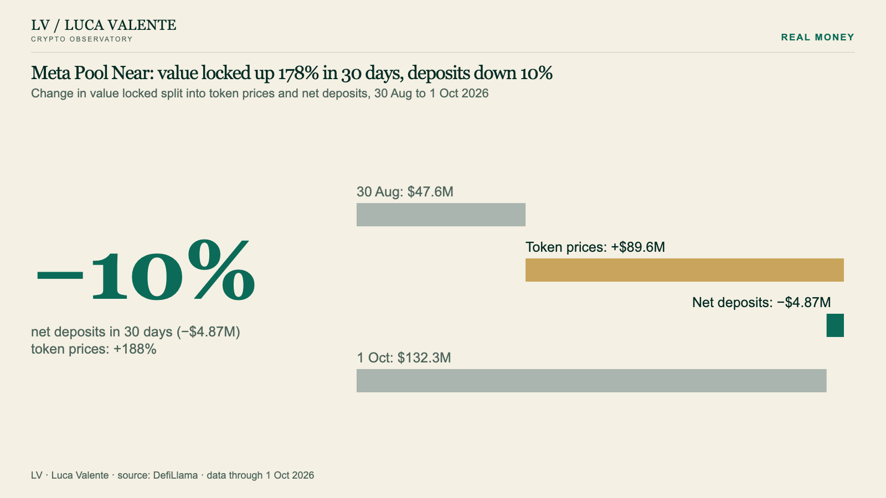

Real money: prices or deposits
What it measures
- Value locked is quantity times price. When it grows, either the tokens got more expensive or people deposited more.
- This measure splits the 30-day change in value locked into those two parts: the price effect and net deposits.
- The two parts add up to the published change.
How to read it
- Price effect: the quantities held 30 days earlier, times the change in each token’s price.
- Net deposits: the change in quantities at today’s prices, deposits minus withdrawals.
- Stablecoins count at a fixed price. Tokens that accrue yield rise in price on their own: that part lands in the price effect.
- The starting day is the one with the median value locked among the five days around 30 days earlier, so one odd day cannot inflate the result.
- When one token is replaced by another the two effects cancel out: those cases are marked, not read as a flow.
A real example
1 Oct 2026
Meta Pool Near: value locked up 178% in 30 days, deposits down 10%
